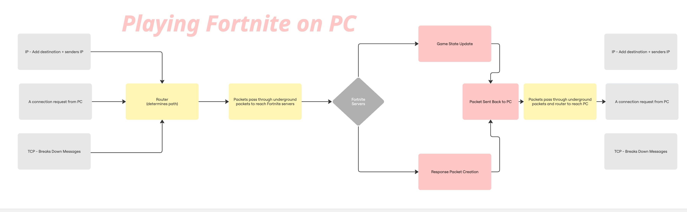

Fortnite is a popular online video game developed by Epic Games that combines fast-paced shooting, creative building, and competitive survival elements. At its core, Fortnite is a battle royale game where 100 players drop onto an island and fight to be the last person or team standing. Beyond the battle royale mode, Fortnite offers various gameplay experiences including creative building challenges and cooperative story missions. Known for its vibrant graphics, regular updates, and crossover events with popular franchises, Fortnite has become a cultural phenomenon enjoyed by millions worldwide.

Fortnite offers multiple game modes to suit different play styles. The most famous is Battle Royale, where players compete solo or in teams to survive until the end. Creative Mode allows players to build their own worlds, design games, and experiment with Fortnite’s building tools in a sandbox environment. Meanwhile, Save the World is a cooperative player-versus-environment (PvE) mode where players team up to fight waves of enemies and complete missions. Each mode offers a unique way to enjoy Fortnite’s mechanics and community.
At its core, Fortnite is about building and shooting to defeat your opponents. Regardless of the game mode or situation, you always want to survive as long as possible by using the mechanics available to you to eliminate your enemies.
Fortnite’s island is constantly evolving, with new areas, themes, and events introduced each season. The game’s storyline unfolds through in-game events, cinematic trailers, and character lore, creating a rich narrative backdrop. Players encounter different factions, mysterious characters, and world-changing phenomena, all contributing to an immersive experience. This evolving world keeps the game fresh, encouraging players to explore and engage with new content while following the unfolding story.

This diagram shows how the process of connecting to the Fortnite servers works.
